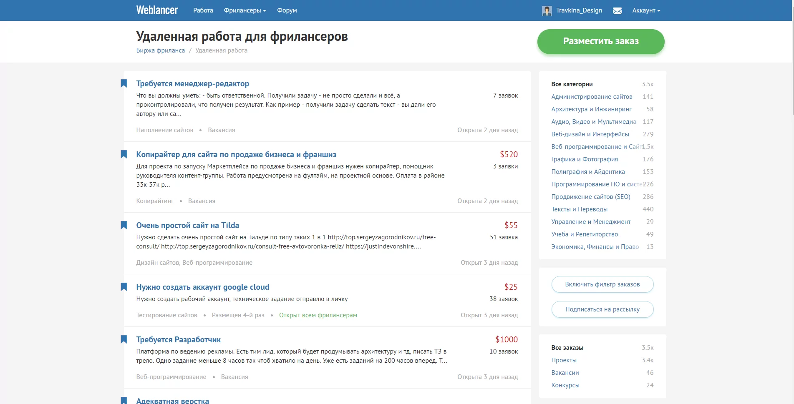

Лучшие биржи фриланса для начинающих и как на них заработать
Биржи фриланса — отличный способ заработать первые деньги на удалёнке. Рассказываем о лучших сайтах и правилах заработка на примере сферы дизайна.
Идеальный процесс работы на фрилансе выглядит так: выбираете биржу, подаёте заявку на интересные проекты, выполняете задачи и получаете деньги. На деле всё гораздо сложнее: трудно найти хороший заказ и выделиться на фоне других исполнителей.
Лучшие биржи фриланса для начинающих дизайнеров
Биржи фриланса не считаются главным источником дохода у прокачанных специалистов, но крупные площадки — отличный вариант для новичков, которые пока разбираются с тем, как устроен рынок, как общаться с заказчиками какую работу они могут найти в разных сферах.
Weblancer
Русскоязычная биржа фриланса для начинающих и опытных специалистов, на которой можно найти работу в разных сферах: веб-дизайн, обработка фотографий, полиграфия, продвижение сайтов и так далее. Для начала работы на бирже Weblancer потребуется регистрация, после вам начислят 30 универсальных заявок; если нужно больше, придётся оплатить тарифный план. Чем больше специализаций выбрано, тем дороже придётся заплатить за использование биржи.
Freelancer
Популярная биржа с удобным интерфейсом и множеством возможностей заработать. После регистрации она сразу предлагает ввести свои платёжные данные, что немного смущает, но это затем, чтобы подтвердить карту, на которую приходит оплата. Freelancer называют условно-бесплатной биржей: подавайте бесплатно до трёх заявок в день, а за остальные придётся заплатить.
FL
Чтобы нормально работать на этой бирже фриланса, оплатите аккаунт PRO: он автоматически повышает рейтинг на 20% и даёт доступ к премиум-проектам. Стоимость одного месяца составляет 1 749 рублей, при оплате трёх месяцев — скидка 7%, а при покупке аккаунта на год — 20%. Аккаунт PRO гарантирует получение денег за проект, без него же придётся общаться с заказчиком напрямую.
Freelancehunt.com
Бóльшая часть заданий на этой бирже связана с дизайном, программированием и копирайтингом. Из плюсов — на бирже Freelancehunt.com можно работать совершенно бесплатно, ничего дополнительно оплачивать не нужно, а комиссия за работу платформы включается в оплату проекта.
Work-zilla
Ещё одна биржа фриланса для начинающих с гарантией оплаты и возможностью разрешить спорные ситуации с помощью арбитража. Платформа хороша тем, что здесь есть много заданий, не требующих высокой квалификации. Требуется оплата подписки.
Upwork
Эта платформа подойдёт тем, кто хочет попробовать силы в работе с иностранными заказчиками. Пользуются Upwork и бесплатно, но лучше оплатить аккаунт — так профиль станет доступен для заказчика, с вами смогут связаться, а ещё вы увидите, какие оферы сделали клиенту конкуренты, чтобы предложить более выгодные условия.
Freelance.ru
Особенность этого проекта в том, что он вырос на базе форума для фрилансеров. На бирже описаны полезные советы для новичков, здесь же легко попросить совета у более опытных коллег. Платформа подходит дизайнерам и программистам, но заказы этими сферами не ограничены. Чтобы полноценно пользоваться возможностями Freelance.ru, оплатите подписку.
Freelancejob.ru
Одна из старейших бирж фриланса в рунете, предлагающая довольно интересные услуги. К примеру, на сайте биржи есть каталог профессионалов, в который можно попасть, если заявку одобрят. Попадание в список обеспечивает повышенный интерес со стороны заказчиков и прибавляет мотивации: всегда приятно знать, что твои навыки чего-то стоят. В остальном биржа похожа на уже рассмотренные нами.

Как заработать на фрилансе
Фриланс привлекает свободным графиком и возможностью выбирать ту работу, которой хочется заниматься, но большинство начинающих специалистов боятся покидать офисы из-за страха не найти заказ и остаться без денег.
На первых порах фриланс совмещают с основной работой: вы будете утомляться, но зато не придётся переживать, что вам нечем платить за квартиру. Как только появятся стабильные клиенты и деньги, тогда и время думать о полноценном переходе на фриланс.
Нужно быть готовым выполнять простые и дешёвые заказы, стоимостью 1–5 тысяч рублей. У таких заказов один плюс: они не потребуют особых знаний, а значит, вы не потратите много времени на их выполнение. Сколько заработаете — будет зависеть от вашей скорости и качества работы.
ем лучше портфолио и большеp отзывов, тем выше шанс, что вам поручат более сложный и дорогой проект. Поэтому в самом начале важно поработать на репутацию и зарекомендовать себя как ответственного исполнителя, который не нарушает установленные сроки и делает работу качественно.
Когда почувствуете уверенность в своих силах, начните искать более высокооплачиваемые задания. На этом этапе к выбору проекта стоит подходить очень ответственно: иногда несколько мелких заказов могут принести больше денег за меньший срок, чем одна масштабная работа.
Кроме бирж фриланса для новичков, стоит подключить и другие способы поиска клиентов, начиная с личных знакомств и заканчивая социальными сетями. Чаще всего крутые проекты получают только напрямую от заказчика.
Как правильно работать на фрилансе
Выберите специализацию: если одновременно делать сайты, рисовать логотипы, анимировать иконки и писать тексты, то заработать будет намного сложнее, ведь так не получится развить навыки ни в одной из областей.
Затем проанализируйте биржи фриланса и заказы на них, выберите 3–5 наиболее подходящих, а уже потом заполните профиль. Заказчик должен сразу видеть ваши сильные стороны и навыки. Подумайте, что отличает вас от других исполнителей, и сделайте на этом акцент.
Никогда не подавайте заявку без сопроводительного письма — покажите заказчику, что вы ознакомились с проектом и способны сделать работу на хорошем уровне.
Не менее важно внимательно изучать проекты, на которые вы собираетесь подать заявку, — чтобы понимать, что требуется сделать и сможете ли вы справиться с этой задачей.
Как наладить удалённую работу
Сначала стоит разобраться с деньгами: посчитайте, сколько денег вам нужно для комфортной жизни, а потом подумайте, сколько заказов придётся выполнить. Если вы легко вышли на уровень желаемого заработка, самое время ставить новую цель и увеличивать стоимость часа своей работы. Если же никак не достичь достойной оплаты, то стоит проанализировать ситуацию и исправить ошибки.
Часто фрилансеры сталкиваются с проблемой планирования времени — организовать себя очень непросто. Если вы понимаете, что время утекает сквозь пальцы, а дела стоят на месте, то стоит подумать, как увеличить свою эффективность.
Глобальная задача любого фрилансера — работать как можно меньше и получать как можно больше. Часть освободившегося времени лучше тратить на поиск перспективных проектов и заказчиков, получение новых знаний и изучение новой программы. Ну или на свой личный проект.
Как убедить заказчика дать вам работу
Когда на один проект претендуют сразу несколько человек, очень важно выделиться из общей массы и заявить о себе. Если у вас нет прокачанного портфолио и сотни отзывов, остаётся покорить клиента при личном общении.
Подавая заявку на заказ, не поленитесь и напишите, какие идеи у вас появились, — интерес к работе всегда подкупает. Иногда клиентам предлагают дополнительный бонус: например, если речь идёт о дизайне сайта, то можно пообещать бесплатный логотип или оформление email-рассылки.
Если вы нашли контакты заказчика, всегда есть смысл это сделать. Начать разговор можно с уточнения деталей проекта, а затем убедить заказчика в том, что вы — лучший кандидат для этой работы.
6 ошибок начинающих фрилансеров
Большинство фрилансеров допускают одни и те же ошибки. Вот как избежать популярных проблем.
- Переоценка собственных возможностей
Если вы не имеете ни малейшего представления о том, как сделать полученный заказ, стоит подумать, как вежливо отказаться. Если не справитесь, платой станет репутация, которую придётся очень долго восстанавливать. Ещё лучше — анализировать свои возможности до подачи заявки и не цепляться за каждую работу.
- Работа на износ
Успешно справившись с первыми проблемами фрилансера и получив базу заказчиков, новички начинают работать слишком много. В результате таких фрилансеров ждут проблемы со здоровьем, нервный срыв и невозможность развить свои навыки.
- Отсутствие образования
Первые шаги во фрилансе делают и без особых знаний, выбирая максимально простые задачи. Но если не выберете специализацию и не прокачаетесь в ней, небольшие и часто скучные заказы станут основой вашей работы. Подумайте над тем, где получить хорошее образование, и уделите достаточно времени развитию навыков.
- Отсутствие плана
Составьте план действий, чтобы всегда было понимание, куда вы двигаетесь и что делать, если что-то пойдёт не так. Для начала просто прикиньте, сколько денег хотите заработать, сколько часов в день готовы работать и какими каналами привлечения клиентов будете пользоваться.
- Отсутствие контроля над финансами
Чтобы хорошо зарабатывать на фрилансе, нужно чётко понимать, сколько денег вам нужно, сколько зарабатываете и куда они уходят. В противном случае шансы остаться без денег велики, даже если полученная выручка за месяц превысила ожидаемую.
- Полный отказ от работы в офисе
Многих фрилансеров пугает даже мысль о том, что придётся снова работать в офисе, но если решили заняться новой для себя сферой, то поработать в компании по этому направлению будет не лишним. За полгода легко набраться опыта и научиться справляться с большинством задач под чутким руководством директора, а уже потом думать о карьере фрилансера.
6 советов начинающим фрилансерам
Эти простые советы помогут начать работу фрилансером, организовать рабочий процесс, выполнять задачи качественно и уберечь себя от многих проблем.
- Делайте меньше и лучше
Всегда берите столько работы, сколько точно сможете выполнить хорошо и в срок. Лучше на первых порах получить меньше денег, но показать себя ответственным исполнителем, и в результате получить более крупные заказы.
- Не нарушайте сроки
Если есть привычка откладывать всё на последний момент, работайте над собой и распределяйте время. Ничто так не вредит репутации, как несоблюдение сроков. Если это произошло, то предупредите заказчика заранее и постарайтесь решить проблему.
- Берите предоплату
Или работайте через безопасную сделку — эта функция доступна на большинстве бирж фриланса. Так вы будете уверены, что точно получите оплату за свою работу, а при возникновении споров можно всегда обратиться за помощью к администраторам биржи.
- Думайте, как увеличить доход
Не ограничивайтесь отработанными схемами, оставляйте время, чтобы попробовать себя в новой нише или протестировать новый способ получения клиентов. Так всегда будет возможность получить более интересные предложения.
- Не работайте с сомнительными клиентами
Если уже на моменте обсуждения заказа вы понимаете, что перед вами сложный клиент, лучше отказаться от заказа и потерять деньги. В противном случае вы рискуете потратить гораздо больше времени и нервов на решение проблем и бесчисленные правки.
- Работайте над портфолио
Актуальное портфолио поможет выделиться среди конкурентов и показать, на что вы способны.
Заключение
Общих знаний о работе бирж фриланса будет достаточно, чтобы освоиться в новой сфере, но для большей прибыли придётся создать продающее портфолио, глубже узнать о поиске и привлечении клиентов, заняться коммерческим предложением и развитием личного бренда.